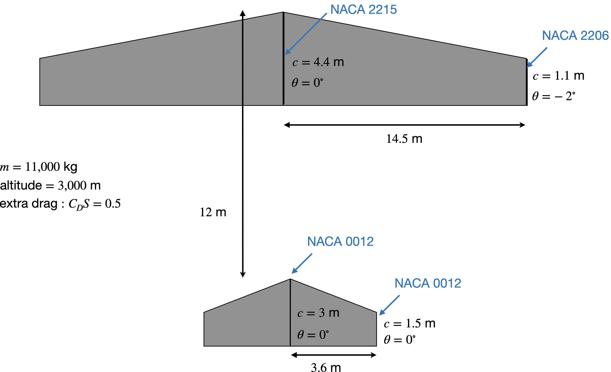

In this problem we build a simplified DC-3, a very successful aircraft that helped make air travel popular in the U.S. Since this homework focuses on longitudinal stability, we will model only the essential elements: a wing and a horizontal tail, as shown in the figure below. We’ll account for the other components (fuselage, vertical tail, engines, etc.) with one lumped “additional drag area” in the flight case. We also won’t worry about individual component masses, but will lump everything into one point mass. Notice that the flight speed is not given. That is something we will design.

Geometry. Start a new project in the workbench, delete the starter geometry, and create the two surfaces from the figure. Both surfaces have straight trailing edges, so the tip stations need a leading-edge \(x\) offset. Remember that positive \(x\) is aft and positive twist is nose up. Use the wing as the coefficient reference, and set the tail’s pitch-trim control to elevator. The DC-3 had a large elevator, roughly 40% of the tail chord, so put the hinge at 60% chord with limits of ±25°. There are no bodies. Under Mass, delete the starter items and add a single point mass of 11,000 kg (we’ll move its \(x\) location shortly). In Propulsion, turn off Include battery and propulsor hardware in mass properties. Replace the starter flight case with a 1-g case at 3,000 m with an additional drag area of 0.5 m², leaving the other case settings at their defaults.
Trim. For every flight case the solver finds two unknowns, the angle of attack and the elevator deflection, such that lift equals weight and the pitching moment about the center of gravity is zero. The twist you enter for the tail stations is the tail’s built-in incidence, and the reported pitch-control deflection is how much elevator the solver needed on top of that incidence to trim (positive is trailing edge down).
Design. We have two goals: (1) trim at maximum \(L/D\) with zero pitch-control deflection, and (2) a static margin of 20%. We want zero deflection at cruise because a deflected elevator adds drag and uses up control authority that we would rather save for maneuvering. You have three knobs: the center of gravity location, which primarily sets the static margin; the flight speed, which primarily sets where you sit on the \(L/D\) curve; and the tail incidence, which primarily sets the pitch-control deflection needed to trim. These are the dominant effects, but the three are coupled, so expect to iterate a bit.
Report your final center of gravity location (measured from the wing root leading edge), cruise speed, tail incidence. Include the plots of L/D vs angle of attack and pitching moment versus angle of attack - how do you know your aircraft is statically stable from these plots?
Explore
Maximum \(L/D\) is a reasonable metric for your RC plane, but for a passenger aircraft, range is a better metric. Range scales with \(V \, L/D\). Plot \(L/D\) versus \(V\) at each trim point, and \(V \, L/D\) versus \(V\). We already found the speed that maximizes the first metric, so now report the speed that maximizes range. As a point of comparison, a typical DC-3 cruise speed is 84 m/s.